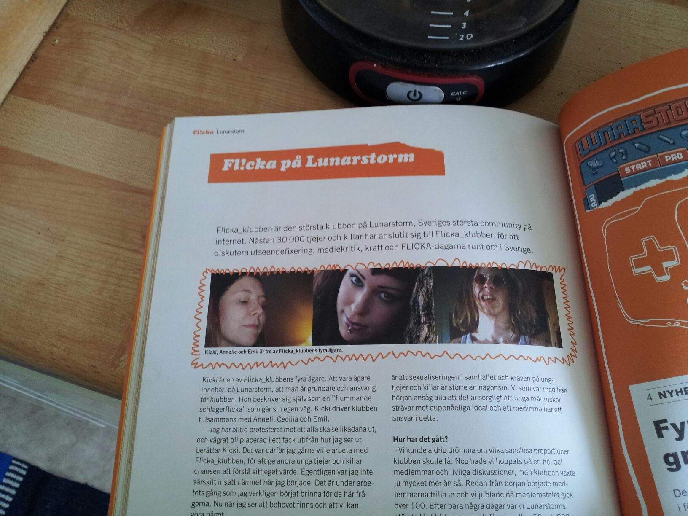

My work - other resourses
Here are some of the projects I've been part of in my sparetime.
Förskoleupproret Eskilstuna
In 2016 I started a local branch of Förskoleupproret regarding the preschool in Eskilstuna. Förskoleupproret in a non-profit, non-political organisation of people that are working for better conditions
in the Swedish prescool. They are demanding smaller groups of children, more staff and less optional chores. Personnel in the preschool is overrepresented in the statistics of people getting sick of stress from their work
due to stress and a constant bad conscience towards the children and all the demands that we don't have the time to do.
The facebook-group for Förskoleupproret has over 35 000 members today (march 2022).
In 2016 I started the local branch in Eskilstuna and we arranged local meetings, discussions with politicians and a large manifestation in May 2018 as a local part of a country-wide campaign. In Eskilstuna we had about 500 participants and
I spoke at the manifestation as founder. I also got the honor of giving over 25 000 signatures demanding better conditions, collected by Förskoleupproret, to our Minister of Education Gustav Fridolin.
Links (in Swedish)
You can read more about Förskoleupproret here or at the open facebook-page here.
Here you can find news about the manifestation 2018:
Fli!cka
The Fl!cka-project was a campaign from the Ministry of Social Affairs that I became part of 2004. The purpose of the campaign was to inform young girls and boys about the affect that unrealistic ideals in commercials had on self-esteem and our expectations of how girls/boys should look and behave. The focus was to creatie awearness and a place for young people to discuss. I was one of the persons in charge of the community "flicka_klubben" on the webpage "Lunarstorm". I also got to participate in a short tour around the country when the Fl!cka-project traveled to different citys and arranged fairs about media and being critical to sourses of messages communicated to us at a daily basis. At the tour I also got to talk in front of a group of teachers about social media and the effect (good and bad) it can have on the individual.
Mälarkatten
Since my childhood up untill 2009 I was part of a cat-club named Mälarkatten that organized cat owners and arranged international cat shows with hundreds of participants. Mälarkatten was a part of the Swedish organisation SVERAK, a part of the international organisation FIFE. I have had different responsibillities in the organization during the years, such as president, secretary, webbmaster and editor of the club magazin. Mälarkatten was cancelled in 2009 due to lack of new members.
Barnloppis
I was one of five parents that started and arranged a second-hand-fair for kids clothes each spring and fall between 2015-2018. I had responsibillity for handling the participants and all the comunication with them, amongs other things. I also run one of the cash registers.